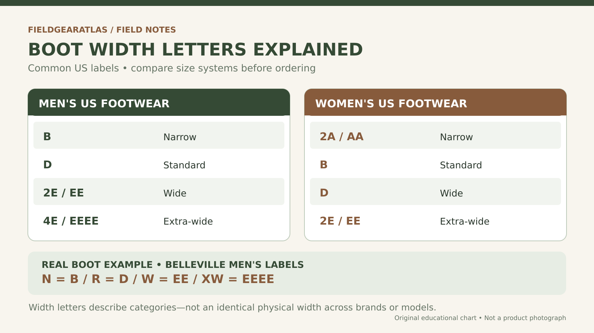
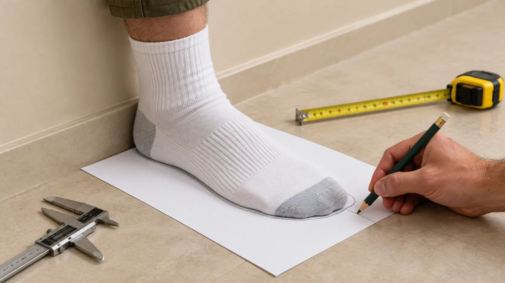
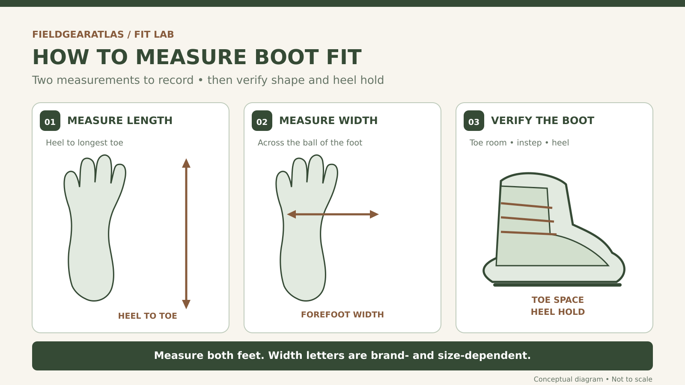

A tactical boot can be the right length and still be the wrong fit. If the sides press against the ball of your foot, your toes feel crowded, or your heel slides as soon as you walk, changing the size number alone may not solve the problem.
In many US men’s footwear charts, D is standard width, 2E (EE) is wide and 4E is extra-wide. These are useful starting labels — not a universal conversion for every tactical boot.
What do D, EE and 4E really mean?
Width is not a single fixed dimension that works across every boot maker. The correct approach combines both foot measurements, the brand’s published size guidance, and a practical fit check in the socks you intend to wear.

A quick boot-width reference
These are conventional labeling examples, not a cross-brand measurement chart.
| Relative fit | Men's label | Women's label |
|---|---|---|
| Narrow | B | 2A / AA |
| Standard | D | B |
| Wide | 2E / EE | D |
| Extra-wide | 4E / EEEE | 2E / EE |
How to measure before choosing a boot
Measure both feet and keep your observations separate. A comfortable toe shape, secure heel and suitable instep volume are at least as important as the code printed next to the size.


Record both feet, sock selection and trial-fit observations. The worksheet and download component should be integrated only when its own QA and content gates are satisfied.
[Worksheet component preview placement]